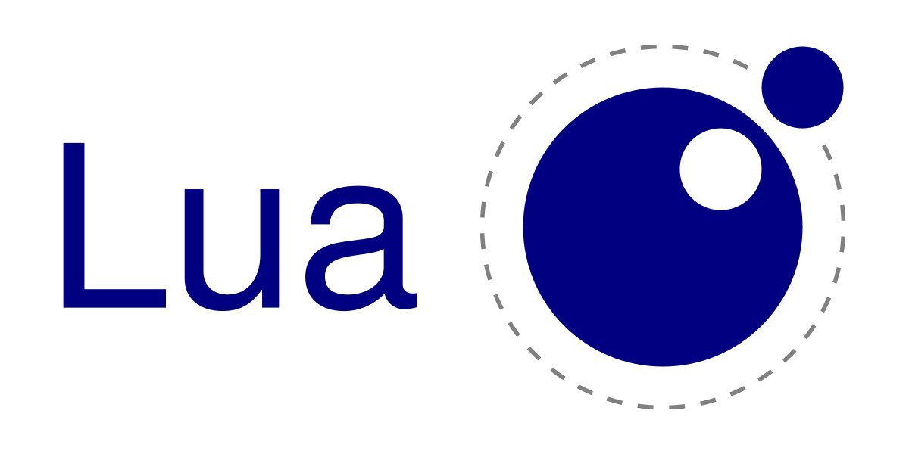
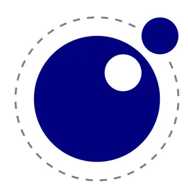
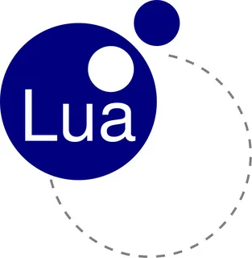

Lua

Lua (лу́а, с порт. — «луна») — скриптовый язык программирования,
разработанный в подразделении Tecgraf (Computer Graphics Technology Group) Католического университета Рио-де-Жанейро. Интер
претатор языка является свободно распространяемым, с открытым исходным кодом на языке программирования Си.
По идеологии и реализации язык Lua ближе всего к JavaScript, в частности, он также реализует прототипную модель ООП, но отличается Паскале-подо
бным синтаксисом и более мощными и гибкими конструкциями. Характерной особенностью Lua является реализация большого числа программных сущностей минимумом
синтаксических средств. Так, все составные пользовательские типы данных (массивы, структуры, множества, очереди, списки) реализуются через механизм таблиц, а механизмы
объектно-ориентированного программирования, включая множественное наследование — с использованием метатаблиц, которые также отвечают за перегрузку операций и ряд других возможностей.
Lua предназначен для пользователей, не являющихся профессиональными программистами, вследствие чего большое внимание уделено простоте дизайна и лёгкости обучения. Язык широко ис
пользуется для создания тиражируемого программного обеспечения (например, на нём написан графический интерфейс пакета Adobe Lightroom). Также получил известность как язык программирова
ния уровней и расширений во многих играх, в том числе Garry’s Mod, Roblox, Minetest.
История появления

Язык разработан подразделением Tecgraf (группа технологий компьютерной графики) Католического университет
а Рио-де-Жанейро в Бразилии, история языка ведёт отсчёт с 1993 года. Авторы языка — Роберту Иерузалимски, Луиш Энрике ди Фигейреду (Luiz Henrique de Figueiredo) и Валдема
р Селиш (Waldemar Celes). Lua распространяется свободно, с открытым исходным кодом на языке Си.Lua 1.0 была спроектирован таким образом, что конструкторы объ
ектов, тогда чуть отличавшиеся от текущего лёгкого и гибкого стиля, включали в себя синтаксис языка SOL (отсюда название Lua: по-португальски sol — «солнце», lua — «луна»
). Управляющие конструкции Lua в основном заимствованы из Модулы-2 (if, while, repeat/until), хотя на них также повлияли Клу (параллельное присваивание, множественное возвраща
емое значение функции как более простая альтернатива вместо передачи параметров по ссылке или явных указателей), C++ («отличная идея объявлять локальные переменные лишь тогда, когда они нужн
ы»), Снобол и awk (ассоциативные массивы). Создатели Lua также признают, что единый вездесущий механизм структурирования данных в Лиспе и Scheme (связный список) оказал большое влияние на и
х решение о выборе таблиц в качестве основной структуры данных для Lua.
Сферы применения

Язык Lua чаще всего используют для разработки игр. Например, для написания сценариев, которы
е управляют игровой логикой, искусственным интеллектом, диалогами, анимацией и другими механиками. С его помощью легко программировать персонажей, поведение
которых не контролируют игроки. Еще язык Lua позволяет создавать героев, поведение которых можно быстро менять, не влияя на игровой движок. Также на Lua пишут модификац
ии (моды), которые расширяют функциональность игры. Например, в Minecraft.С помощью Lua создано много популярных игр, среди которых Crysis, World of Warcraft, Sim City, Far Cry, Stalker.
Lua часто используют, чтобы создать игры на движке Roblox Studio. Он подходит для разного ПО, а Lua позволяет легко писать скрипты для него. Проекты, созданные на Roblox Studio, можно опубл
иковать на Roblox. Это платформа, на которой можно играть, общаться, создавать и выкладывать свои проекты. Так десятки тысяч пользователей смогут увидеть вашу игру.